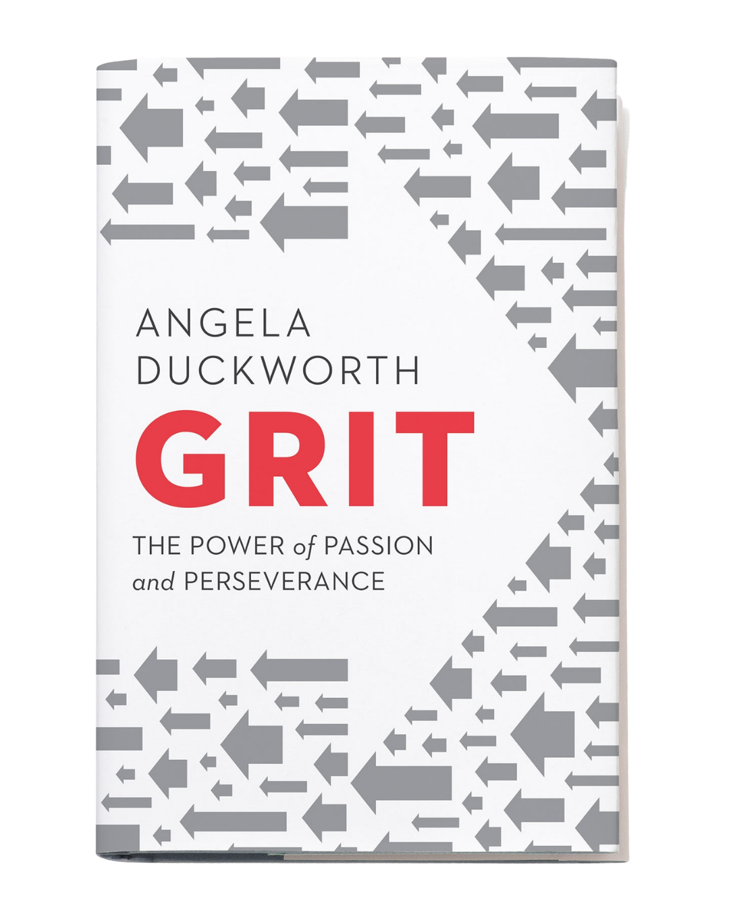

Library › Psychology & People
Grit — Summary & Key Lessons

The power of passion and perseverance — why effort counts twice and talent is the most overrated word in success.
📖 OPEN THE FULL INTERACTIVE BREAKDOWN →🌐 Read it in Hindi, Hinglish, Gujarati, Tamil & 22 more languages — free, with audio.
💡 The Big Idea
Duckworth — MacArthur 'genius grant' psychologist, ex-McKinsey, ex-teacher — spent years asking why some people achieve wildly more than equally talented peers. Her answer, validated from West Point's brutal Beast Barracks to the National Spelling Bee: GRIT, the combination of passion (sustained, focused interest over years) and perseverance (stamina through setbacks). Her framework: talent is real but effort counts twice in the math of achievement; grit can be grown from the inside (interest → practice → purpose → hope) and from the outside (parenting, culture, the Hard Thing Rule); and our 'naturalness bias' — secretly preferring naturals over strivers — blinds us to how excellence actually happens: unglamorous, daily, for years.
🧠 The 6 Key Lessons
Lesson 1: Effort Counts Twice
Chapters 1–3: Showing Up / Distracted by Talent / Effort Counts Twice
At West Point, the military's own admission scores (physical, academic, leadership) failed to predict who survived Beast Barracks — Duckworth's 12-item Grit Scale did. Her central equations dismantle the talent obsession: TALENT × EFFORT = SKILL, and SKILL × EFFORT = ACHIEVEMENT. Effort appears in both equations — it builds skill AND converts skill into results — so at any talent level, effort counts twice. The cultural trap she names is the 'naturalness bias': experiments show we claim to admire hard workers but consistently rate identical performances higher when told the performer is a 'natural.' Worshipping talent is not harmless — it quietly excuses everyone (including us) from the unglamorous accumulation that actually produces mastery, and it lets the merely-gifted coast while the gritty pass them.
📖 Example: Duckworth's data trail: West Point cadets (grit beat every military predictor of Beast survival), spelling bee champions (grittier kids practiced more of the painful, effective kind and outspelled higher-IQ rivals), Chicago public school students (grit… Read the full example →
⚡ Do this: Take the Grit Scale (free online) for your baseline. Then audit one 'talent story' you tell about someone you envy — list the practice hours, years, and failures the story omits. Do the same math for the skill you've written off in yourself.
Lesson 2: Passion Is Developed, Not Discovered
Chapters 6–7: Interest / Practice
'Follow your passion' fails because it implies passion is found fully formed — Duckworth's research says interests are DEVELOPED: triggered by ordinary encounters, deepened by repeated engagement, and only later becoming identity. The progression: play first (sampling widely, low stakes), then discipline (structured development), then — for the gritty — years of deliberate practice: working specifically on what you CAN'T yet do, with stretch goals, full concentration, immediate feedback, and repetition until yesterday's ceiling is today's floor. Deliberate practice feels effortful and often unpleasant (elite performers rate it their least enjoyable activity) — which is exactly why gritty people ritualize it: same time, same place, no decisions required. The mistake at both ends: quitting the exploration too early ('nothing grips me') or staying in comfortable repetition forever (10,000 hours of the same easy year).
📖 Example: Olympic swimmers, chess masters, and spelling champions all show the same signature: it's not total hours but hours of the painful kind that separate levels — bee winners did more solitary word-drilling (rated least fun, most effective) while others read for… Read the full example →
⚡ Do this: If you lack a passion: schedule structured sampling — three new domains in 90 days, real attempts, no commitments. If you have one: install deliberate practice — 45 daily minutes on your specific weakest sub-skill, with a feedback source, ritualized to the same hour.
Lesson 3: Purpose: The Multiplier on Passion
Chapter 8: Purpose
Interest sustains attention; PURPOSE — the conviction that your work matters to people beyond yourself — sustains decades. Duckworth's grit paragons almost universally describe their work as deeply connected to others' wellbeing, and the data agrees: purpose scores climb with grit scores. The crucial finding for ordinary careers: purpose is less about WHAT you do than how you FRAME it — the same job can be a job (paycheck), a career (ladder), or a calling (contribution), and callings are found in every occupation and missing in every occupation, including medicine and ministry. Amy Wrzesniewski's research shows the frame can be actively rebuilt ('job crafting'): reshape your tasks and your understanding of them toward the people they serve, and the calling often follows the framing, not the reverse.
📖 Example: The parable of the bricklayers anchors the chapter: three men laying identical bricks answer 'What are you doing?' — 'Laying bricks.' / 'Building a church.' / 'Building the house of God.' Job, career, calling. Duckworth's living case: Alex Scott, diagnosed… Read the full example →
⚡ Do this: Run the job-crafting exercise: list your core weekly tasks, then rewrite each in terms of the human it ultimately serves ('reconciling invoices' → 'making sure 40 families' paychecks are right'). Post the rewritten list where you'll see it. Revisit in a month and notice which frame stuck.
Lesson 4: Hope: The Learnable Kind
Chapter 9: Hope
Grit's fourth asset isn't sunny optimism but learned HOPE: the expectation that your own efforts can improve your future, resting on a growth mindset (abilities are developable — Dweck's work) and optimistic explanatory style (setbacks explained as temporary and specific, not permanent and pervasive). The chain Duckworth draws: growth mindset → optimistic self-talk → perseverance over adversity. Its opposite, learned helplessness (from Seligman's famous experiments), is what happens when suffering seems uncontrollable — and the antidote discovered later completes the loop: it isn't suffering that breaks people; it's suffering they believe they can't influence. Practical hope is trained like a muscle: catch catastrophic self-talk mid-sentence, dispute it like a lawyer, and keep receipts of past difficulties overcome by effort.
📖 Example: The foundational experiments: dogs given inescapable shocks later failed to escape even when escape was easy — while dogs who'd had control jumped free immediately. The human mirror: Duckworth cites teachers and athletes whose response to failure ('I'm not a… Read the full example →
⚡ Do this: Install the dispute ritual: when a setback triggers 'always/never/everything' self-talk, write the claim, then argue the temporary-and-specific counter-case with evidence. Keep a 'hard things survived' list in your notes app — read it before every daunting attempt.
Lesson 5: Growing Grit From the Outside: The Hard Thing Rule
Chapters 10–13: Parenting / The Playing Fields / Culture
Grit grows in cultures — families, teams, companies — that combine high standards with high support ('wise' parenting/leadership: demanding AND warm; neither authoritarian nor permissive). The transferable tools: the HARD THING RULE (Duckworth's family policy — everyone, parents included, picks a hard thing requiring daily deliberate practice; you can quit only at a natural stopping point, never mid-season because of a bad day; and YOU pick your hard thing); extracurricular follow-through (the single activity sustained ≥2 years with advancement predicts adult grit better than almost anything); and joining gritty cultures on purpose — because conformity does what willpower can't: 'if you want to be grittier, find a gritty culture and join it. If you're a leader... create one.' Identity does the heavy lifting: gritty people finish because 'that's who we are,' not because each day's cost-benefit favors it.
📖 Example: The Finnish concept of 'sisu' (bone-deep perseverance as national identity), Pete Carroll's Seahawks ('Always compete' as cultural liturgy), and JPMorgan's Jamie Dimon (fortitude drilled as corporate value) illustrate culture-scale grit. The family scale:… Read the full example →
⚡ Do this: Adopt the Hard Thing Rule for yourself (and your household): one chosen hard thing each, daily practice, quitting allowed only at natural endpoints. Then audit your cultures: join one group where your aspiration is the norm — and if you lead anything, write the three standards-plus-support behaviors you'll model this month.
Lesson 6: The Grit Culture: How Groups Make Grit Contagious
Part 3: The Culture
Duckworth's final section: grit isn't only individual — it's cultural. The groups you join shape your grit because humans adapt to the standards around them: join a team where quitting is unthinkable and your own threshold rises; join one where 'good enough' rules and your standards quietly sink. Her research shows that the most powerful way to build grit is to be part of a culture that models it — which is why great teachers, coaches and leaders matter so much: they set the norm. The practical lever: choose your environments deliberately (teams, communities, even media diets) and be the standard-setter in the groups you lead. Culture is the container; grit is the water.
📖 Example: Duckworth describes how West Point cadets and elite athletes absorb resilience from the culture around them — the hardest teams produce the hardest members, not because of selection alone, but because the daily norm of 'we don't quit' becomes each person's… Read the full example →
⚡ Do this: Audit the cultures you belong to: which one models the standards you want? Spend one more hour a week in the gritty one, and one less in the 'good enough' one.
✅ 5-Step Action Plan
- Take the Grit Scale; rewrite one 'talent story' with the effort math.
- Sample three interests or install 45 daily minutes of deliberate practice.
- Job-craft your task list toward the humans it serves.
- Train hope: dispute catastrophes, keep the 'survived' list.
- Live the Hard Thing Rule and join one gritty culture.
⚠️ When This Doesn't Work
Grit is only valuable when aimed at something that still exists. Blockbuster was the grittiest company in America — decades of relentless focus, discipline and passion for video rental — and it died because the world moved under it. Duckworth's framework underweights the 'know when to quit' skill. Persistence through a failing strategy is not grit, it is a slow-motion Kodak. Passion plus persistence must include the courage to re-aim.
💀 The Graveyard Proves It
📼 Blockbuster — The $50M 'No' Worth $150 Billion. Burn: 9,000 stores → 1. Read the full case study →
💬 Best Quotes from Grit
- “Enthusiasm is common. Endurance is rare.”
- “Our potential is one thing. What we do with it is quite another.”
- “Grit is living life like it's a marathon, not a sprint.”
Interactive version: mark lessons as read, listen in your language, share quote cards.